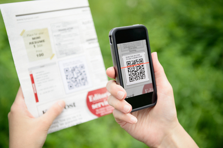
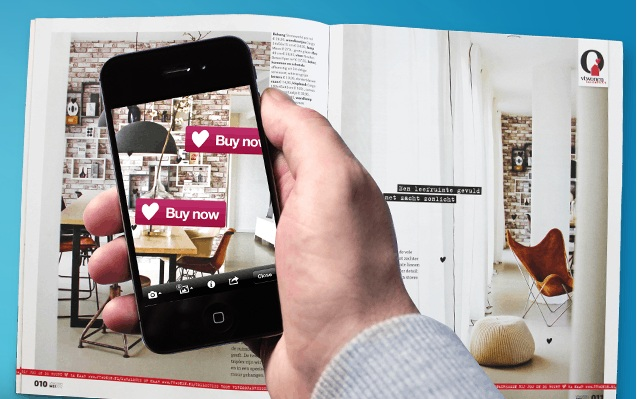

BY
Manohara. K
(1JB10CS054)
|
Under The Guidance Of
style="margin-left:400px"> Mrs. Chaitra.M
Asst. professor
|
AGENDA
- Introduction
- Algorithm Outline
- Text Patch Recognition
- Applications
- Haptic System for Eyes Free and Hands Free Pedestrian Navigation
- Conclusions and Future Work
- References
Introduction
- Augmented Reality (AR) is a new technology
that involves the overlay of computer graphics on the real world
- Linking the physical and digital worlds is a long
standing goal of augmented reality.
- This paper proposes a new method of interacting with
documents termed Paper-Based Augmented Reality that
links patches of text to electronic data and uses a camera
phone as the recognition device.

Figure 1: Creating and using paper-based augmented reality documents:

Figure 1: Electronic data is added to paper documents
without changing the appearance of the paper document
in any way
Algorithm Outline
- PBAR-enabled documents are created by scanning a document and indexing it for text patch recognition
- Data is associated with regions on the document by choosing “hot spots” that are rectangular patches of text, and adding data to the hot spots
- The index information and symbolic hot spot data are stored in the PBAR database.
- A simple example of data in a hotspot is a URL that points to a web page.
Text Patch Recognition
- The objective of the text patch recognition algorithm is to correctly determine the identity
of a page and the x-y position in the page of a small patch of text.
- The
technical challenge is that shows the typical quality of images produced by commonly available camera phones.
- it
is still possible in almost every case to identify the
bounding boxes around words since the spaces between
words and lines can still be distinguished
Applications
Travel Guidebook
- Travel guidebooks are almost out-of-date the minute they are printed.
- PBAR allows someone to point a camera phone at the text that describes the facility and
retrieve the currently available information about it.
Self-Printed Documents
- Documents that are printed on a desktop PC are
typically created by individuals for their personal use.
- PBAR allows users to customize the interactivity of
those documents based on their own needs and permits the database to be under the user’s personal control:
Haptic System for Eyes Free and Hands Free Pedestrian Navigation
- Until now Augmented Reality was mainly associated with visual
augmentation, which is often reduced to superimposing a virtual
object onto a real object
- We present in this document a vibro-tactile system called
HaptiNav, which illustrates the concept of Haptic
Augmented Reality.
- statistical analysis of the mental load, frustration
and effort highlights the advantages of HaptiNav compared
to two other systems.
Conclusion
- A new paradigm for augmented reality was described
in which electronic data is added to paper documents
without changing the appearance of the paper document
in any way.
- Two of the
applications that we’ve created were presented: an
augmented travel guidebook and Clickable Paper. Both
of them show the potential value of paper-based
augmented reality for common applications.
Future papers
- Joystick mapped Augmented Reality Cues for End-Effector controlled Tele-
operated Robots
Aditya Nawab ,Keshav Chintamani1, Darin Ellis, Gregory Auner, Abhilash Pandya
- What Wearable Augmented
Reality Can Do for You
Bruce H. Thomas and Christian Sandor
REFERENCES
- [1]. E. Bier, M. Stone and K. Pier, “Enhanced Illustration Using
Magic Lens Filters,” IEEE Computer Graphics and
Applications, v. 17, no. 6, 62-70, Nov. 1997.
- [2]. M. N. Billinghurst and A. Henrysson, “Research Directions
in Handheld AR,” Int. Journal of Virtual Reality, v. 5 no. 2,
51-58, 2006.
- [3]. P. Fuchs, G. Moreau, S. Donikian, 38 auteurs, Le traité de
la réalité virtuelle, troisième édition, cinquième volume :
« Les humains virtuels ». Les Presses de l’Ecole Mines
ParisTech. ISBN 978-2-911256-00-4, March 2009.
- [4] R. Azuma, Y. Baillot, R. Behringer, S. Feiner, S. Julier, and
B. Mac- Intyre. Recent advances in augmented reality.
IEEE Comput.Grap